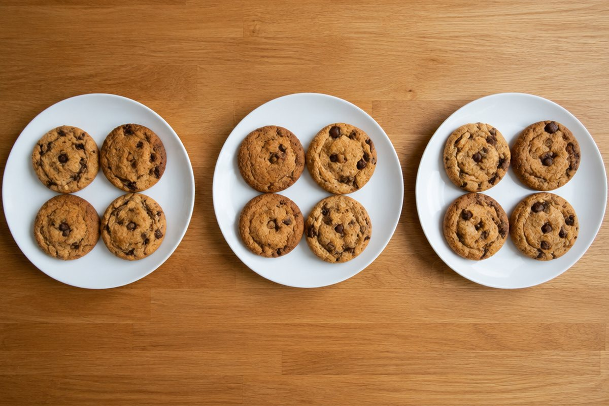

똑같이 나누면 몇 개씩일까?

쿠키 12개를 친구 3명이 똑같이 나눠 먹으려면 한 명이 몇 개씩 먹어야 할까요? 이럴 때 나눗셈을 써요.
나눗셈의 두 가지 뜻
12 ÷ 3은 '12를 3명에게 똑같이 나누면 한 명에 몇 개?'라는 뜻도 되고, '12를 3개씩 묶으면 몇 묶음?'이라는 뜻도 돼요.
12 ÷ 3 = 4에서 12는 나누어지는 수, 3은 나누는 수, 4는 몫이라고 해요.
12 ÷ 3 = 4 (쿠키 12개를 3명이 나누면 한 명에 4개)
곱셈과 나눗셈은 친구예요
나눗셈의 몫은 곱셈구구로 찾을 수 있어요. 12 ÷ 3의 몫은 3 × □ = 12에서 □를 찾으면 돼요.
그래서 4 × 3 = 12라는 곱셈식 하나로 12 ÷ 3 = 4, 12 ÷ 4 = 3이라는 나눗셈식 두 개를 만들 수 있어요.
4 × 3 = 12 → 12 ÷ 3 = 4, 12 ÷ 4 = 3
나머지가 있는 나눗셈
29 ÷ 4는 4씩 7묶음을 만들면 28이 되고 1이 남아요. 이것을 29 ÷ 4 = 7 … 1이라고 쓰고, 1을 나머지라고 해요.
나머지는 항상 나누는 수보다 작아야 해요. 계산이 맞는지는 '나누는 수 × 몫 + 나머지 = 나누어지는 수'로 확인해요.
29 ÷ 4 = 7 … 1 → 확인: 4 × 7 + 1 = 29
이렇게 풀어요: 세로로 나누기
75 ÷ 3을 풀어 볼까요? ① 십의 자리 7을 3으로 나누면 몫 2, 나머지 1이에요. 몫 2를 십의 자리에 써요.
② 남은 1(10을 뜻해요)과 일의 자리 5를 합쳐 15를 만들어요. ③ 15 ÷ 3 = 5, 몫 5를 일의 자리에 써요. 답은 25예요. 4학년에서는 156 ÷ 12 = 13처럼 두 자리 수로 나누는 것도 같은 방법으로 해요.
75 ÷ 3 = 25, 156 ÷ 12 = 13
핵심 낱말
- 나눗셈
- 어떤 수를 똑같이 나누는 계산
- 몫
- 나눗셈을 해서 나온 값
- 나머지
- 똑같이 나누고 남은 수, 나누는 수보다 작아요
- 나누어떨어진다
- 나머지가 0인 것
한 줄 정리
- 나눗셈은 똑같이 나누거나 똑같이 묶을 때 써요.
- 나눗셈의 몫은 곱셈구구로 찾을 수 있어요.
- 나머지는 나누는 수보다 작아야 하고, 나누는 수 × 몫 + 나머지로 확인해요.